ReMed Bio
모든 감정에 대한 치료제,
모든 후회와 슬픔의 치료법
모든 감정에 대한 치료제,
모든 후회와 슬픔의 치료법
마음의 병 치료부터 예방, 관리까지 소비자의 필요를 충족하는 안전하고 편리한 솔루션을 제공합니다.
최신 연구 성과와 과학적 검증을 기반으로, 상상력이
더해진 혁신적인 제품과 서비스를 개발합니다.
감정을 수확하고, 기억을 박제하고, 순간을 저장
합니다. 좋았던 기억을 되살리고 부정적인 기억을
예방하는 것을 목표로 합니다.
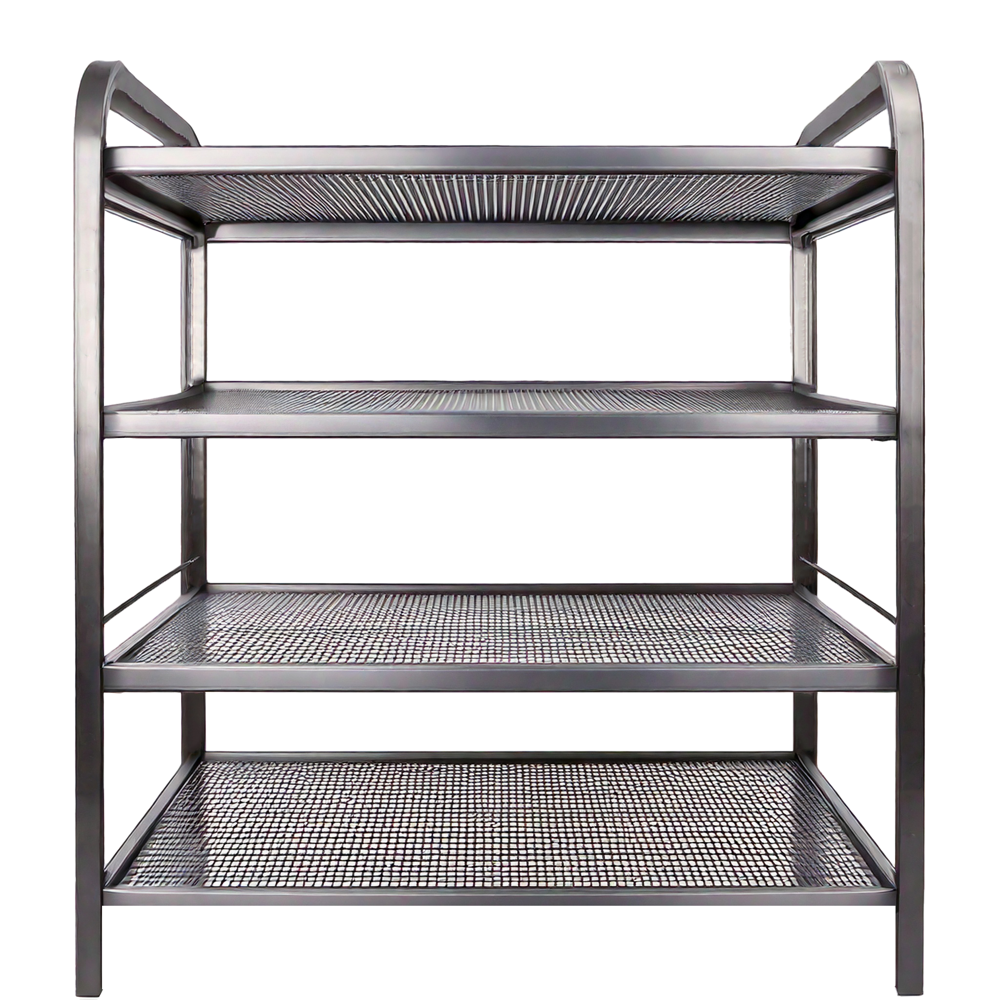
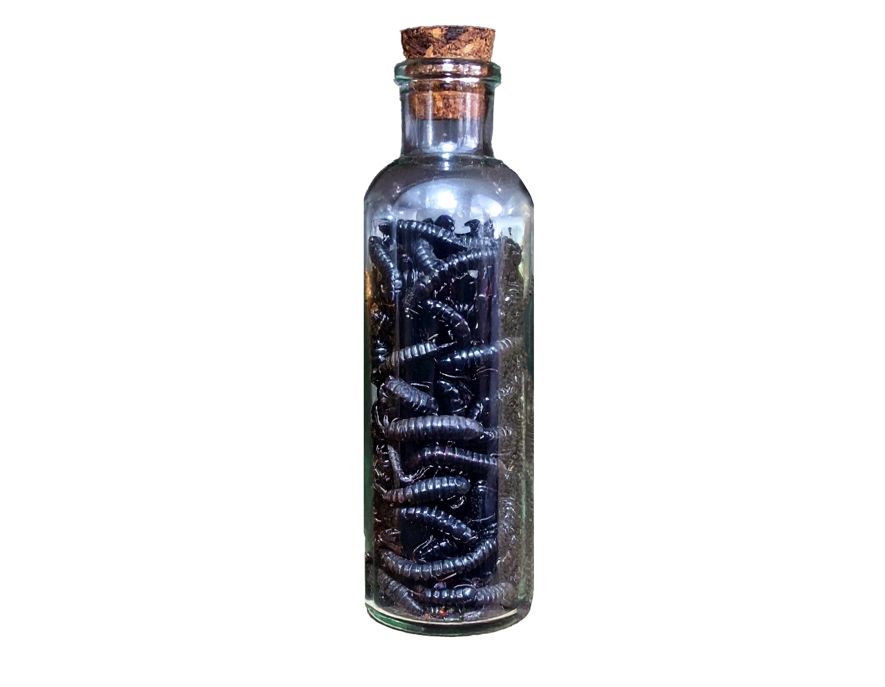
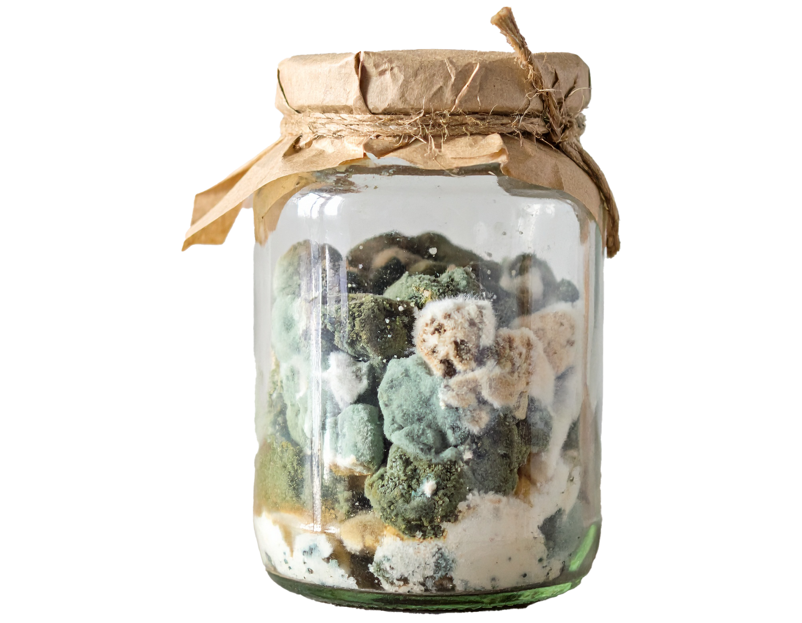
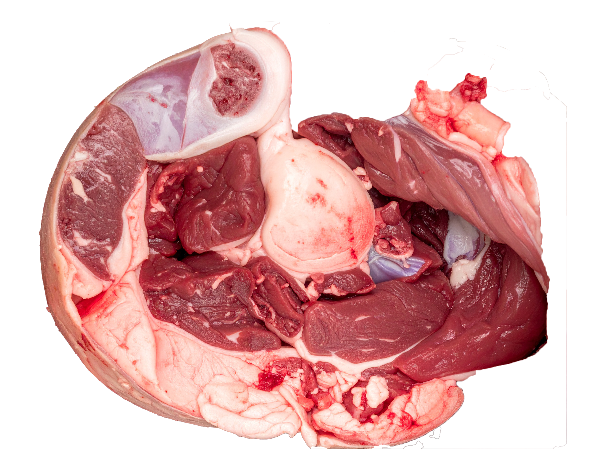
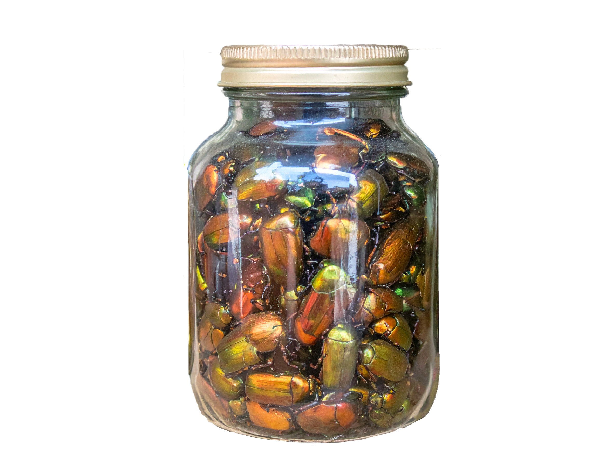
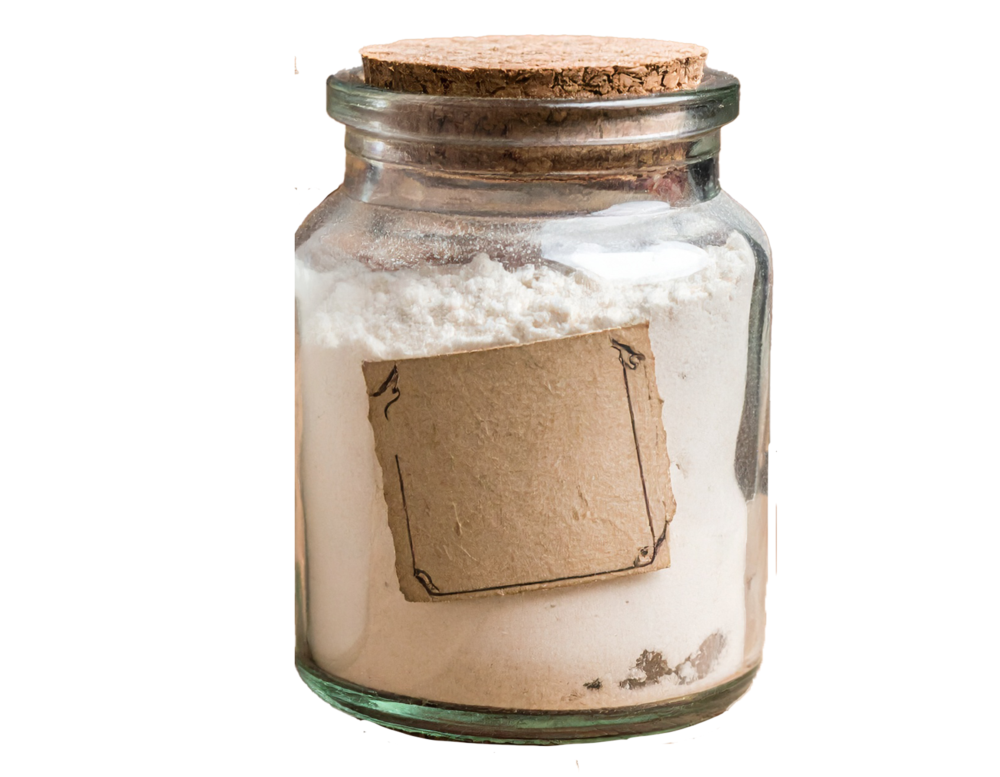
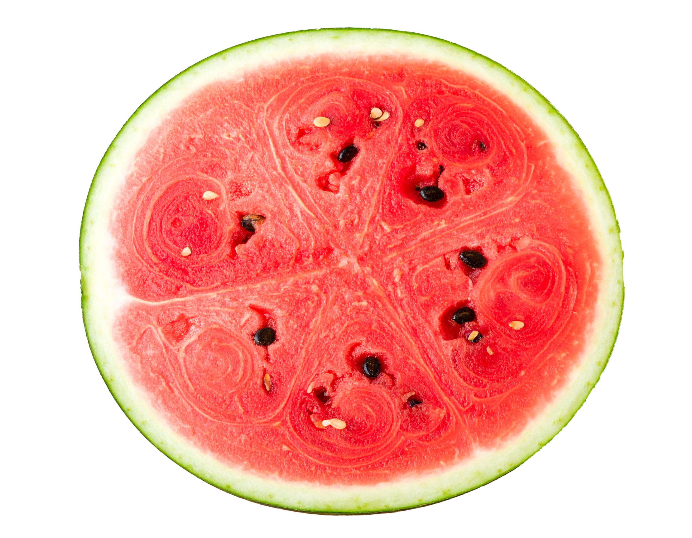
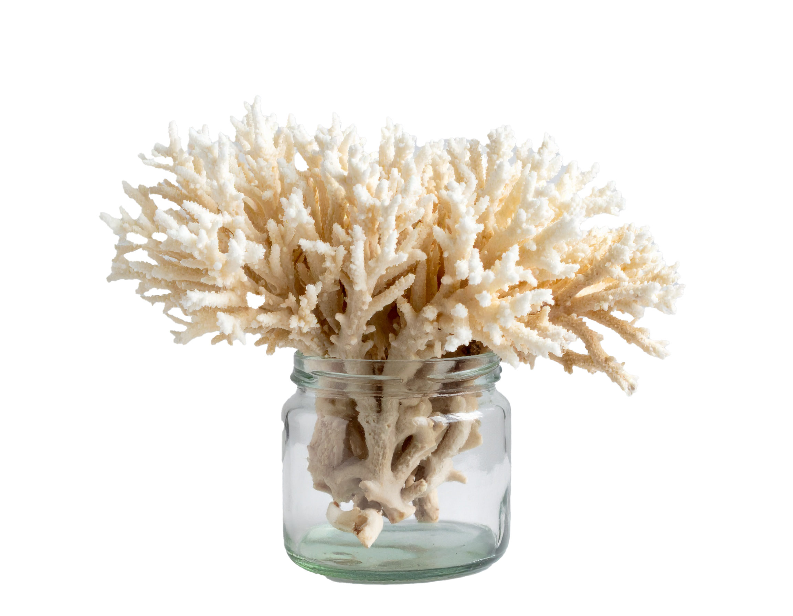
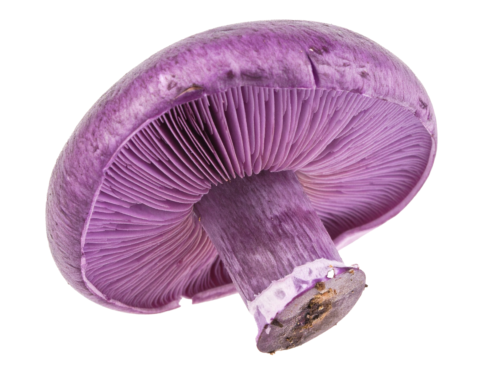
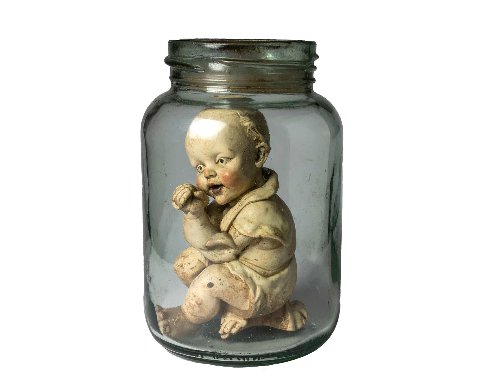
그 외 다른 재료들은 실험실 견학을 신청하면 체험하실 수 있습니다.

실험실에서 갓 나온 상품들이 당신의 감정 상태를 진단해드립니다.
마음 배양 키트를 사용해 당신의 감정을 키우고 분석해보세요.
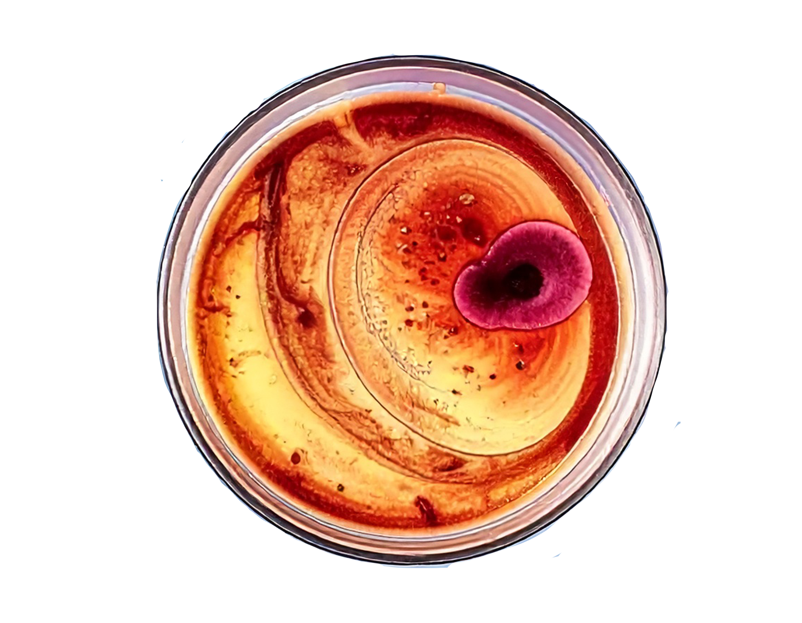
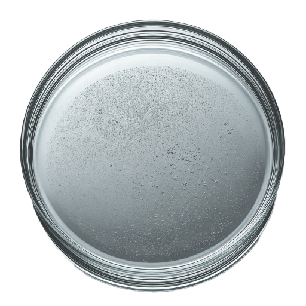
전문 상담원이 당신이 배양한 감정을 분석해드립니다.
상담 시간: AM. 4:00~6:00
페트리 접시에 배양된 감정의 사진을 찍어서 인화하거나 실물을 들고 AM 4:00~6:00에 화장실 거울에 비춰주세요.
빛을 완전히 차단해주세요. 전문 상담원이 거울 속에 나타나 친절하게 분석해드립니다.
기본적인 예의를 지키는 것을 잊지 마세요.